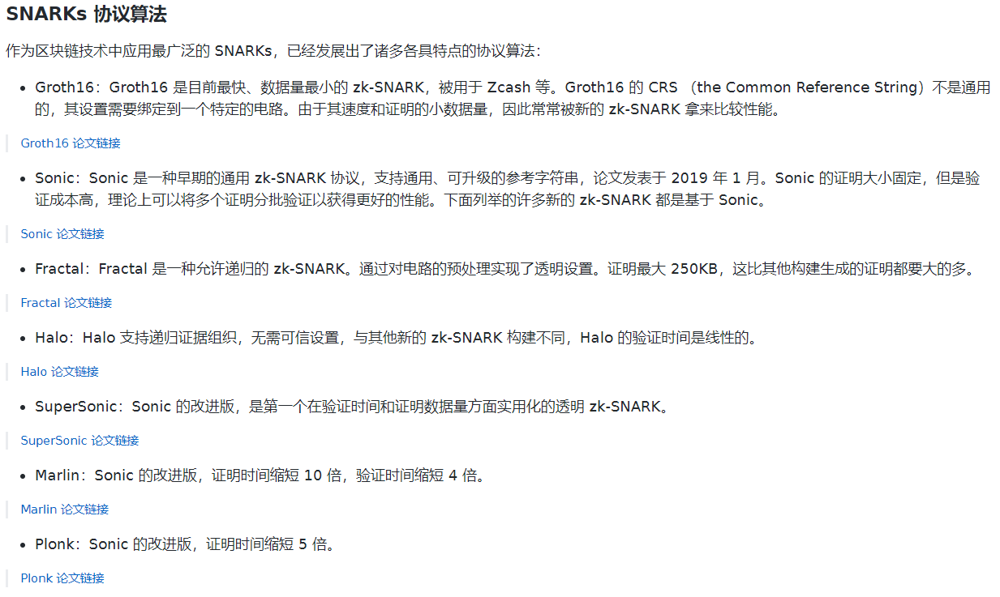
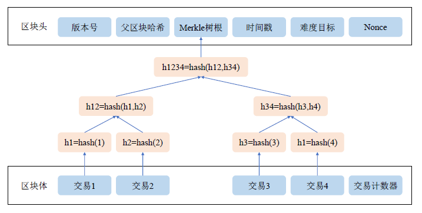

参考
基础
Schwatz-Zippel 定理：两个不等的d阶多项式，最多有d个重合点。
多项式的「知识」就是多项式的系数。所谓「知道」多项式就是指「知道」多项式的系数。
伪随机数是用确定性的算法计算出来自[0,1]均匀分布的随机数序列。并不真正的随机，但具有类似于随机数的统计特征，如均匀性、独立性等。在计算伪随机数时，若使用的初值（种子）不变，那么伪随机数的数序也不变。
承诺方案
零知识证明：
零知识证明(Zero—Knowledge Proof)，是由S.Goldwasser、S.Micali及C.Rackoff在20世纪80年代初提出的。它指的是证明者能够在不向验证者提供任何有用的信息的情况下，使验证者相信某个论断是正确的。
研究背景（隐私问题）
比特币网络通过以下三个措施进行隐私保护或匿名：
1、地址的生成无需实名认证；
2、通过地址不能对应出真实身份；
3、同一拥有者的不同账号之间没有直接关联，无法得知特定用户的全部比特币数量。
二、 比特币的匿名性弱点
1、与法币的兑换环节。比特币交易所的实名认证，是有效的反匿名措施，其他要求实名的比特币服务商也如此。有人说可以用假身份证件来逃过，在目前这是可行的，但以后交易所的身份验证一定会越来越严格。
2、交易公开。只需知道一个地址就可以找到关联人的一系列地址。另外，在论坛、微博、TWITTER、REDDIT、BBS等留下的许多信息，通过大数据分析可以汇总起来，会发现一系列的线索，除非你谨慎得像中本聪。
3、交易的汇总输入会暴露拥有人的其他地址。一旦你发送钱包中的大部分币给某人或某交易所，基本上会把你的全部地址都暴露无遗。因为交易会汇总大部分地址中的币打出去。
4、比特币的通讯协议未加密，向外打款时，协议分析软件可以找出IP地址与比特币地址的对应关系，如果在全国布署了这种监控系统，那定位到你的单位或小区就不是问题。(当然可以用TOR、VPN之类逃避)
举例
阿里巴巴与四十大盗，数独·····
用处
零知识证明的一些用处：——安比实验室
- 数据的隐私保护：在一个数据表格中，多多少少都有一些信息不想被暴露，比如当年我的成绩单，我只想向人证明，我的成绩及格了，但是我不想让别人知道我到底考了61分还是62分，这会很尴尬。我没有心脏病，但是保险公司需要了解这一点，但是我不想让保险公司知道我的隐私信息。那我可以证明给保险公司看，我没有心脏病，但是病历的全部并不需要暴露。我是一家企业，我想向银行贷款，我只想向银行证明我具备健康的业务与还款能力，但是我不想让银行知道我们的一些商业秘密。
- 计算压缩与区块链扩容：在众多的区块链扩容技术中，Vitalik 采用 zkSNARK 技术能够给现有的以太坊框架带来几十倍的性能提升。因为有了计算的证明，同样一个计算就没必要重复多次了，在传统的区块链架构中，同样的计算被重复多次，比如签名的校验，交易合法性校验，智能合约的执行等等。这些计算过程都可以被零知识证明技术进行压缩。
- 端到端的通讯加密：用户之间可以互相发消息，但是不用担心服务器拿到所有的消息记录，同时消息也可以按照服务器的要求，出示相应的零知识证明，比如消息的来源、与发送的目的地。
- 身份认证：用户可以向网站证明，他拥有私钥，或者知道某个只要用户自己才知道的秘密答案，而网站并不需要知道，但是网站可以通过验证这个零知识证明， 从而确认用户的身份
- 去中心化存储：服务器可以向用户证明他们的数据被妥善保存，并且不泄露数据的任何内容。
- 信用记录：信用记录是另一个可以充分发挥零知识证明优势的领域，用户可以有选择性的向另一方出示自己的信用记录，一方面可以有选择的出示满足对方要求的记录分数，同时证明信用记录的真实性。
- 构造完全公平的线上数字化商品的交易协议。
- 更多的例子，可以是任何形式的数据共享，数据处理与数据传输。
现有应用
Zcash 是第一个应用zk-SNARK技术的区块链，它能够提供完全隐私化和加密化的虚拟货币转账。
以太坊(Ethereum)目前也在试图把Zcash的隐私交易功能作为一个预编译合约链接到其上的其他智能合约中（由于如果不使用预编译，每个区块的gas限制将无法完成复杂的zk-SNARK运算）。这被称为ZoE (Zcash over Ethereum)，不过即使做了预编译优化，他能提供的隐私验证能力非常有限。
匿名 Coin，比如 Monero, 比如 ZCash。
缺点
但与此同时，它还并不是一项完美的技术。其一，它需要建立信任的设置，如果涉及的用户彼此争吵，只要有一个人表示不同意，在这些用户所在的群里没有建立起信任设置，就无法建立零知识证明。
其二，生成证明效率低。但在明年的升级中，我们能够将生成证明的效率从四十秒削减到七秒。
最后，这项新兴的技术仍有待时间的验证。像哈希算法，历经30年才从被提出到真正落地应用，而零知识证明，相对来说，才被投入运用一年多，还是一项没有经过测试的技术。
在2017年12月3日举办的亚太以太坊技术交流会上，以太坊创始人Vitalik Buter压轴出场，发表了主题为“以太坊区块链中的隐私保护”的演讲。在演讲中，Vitalik Buterin为在场听众介绍了四种适用于以太坊区块链的兼顾隐私性和安全性的解决方案：通道（Channels）闪电网络、混合器（Mixers）、环签名（Ring Signature）及零知识证明(Zero knowledge proofs)。
安全性依赖于指数知识假设
零知识证明入门
零知识证明象牙塔下的渣渣-CSDN博客零知识证明 ：通俗易懂，但不涉及细节
[1906.07221] Why and How zk-SNARK Works (arxiv.org) ：
从零开始学习 zk-SNARK（一）——多项式的性质与证明 (qq.com) ：why and how zkSNARK works 中文版
零知识证明与zkSNARK - 简书 (jianshu.com)
开发工具包
gnark: go语言实现的zksnark库，支持Groth16和PlonK
circom + snarkjs： 基于以太坊的零知识证明实现
snarkjs：iden3/snarkjs: zkSNARK implementation in JavaScript & WASM (github.com)
circom：github.com
入门：circom与snarkjs经典教程：创建第一个零知识 snark 电路
合法捕鱼实例：This Github repo demonstrates how one could set up a Fluree ledger to use zero-knowledge proofs.
Spartan：microsoft/Spartan: Spartan: High-speed zkSNARKs without trusted setup (github.com)
其他
数学证明最早源于古希腊。他们发明（发现）了公理与逻辑，他们用证明来说服对方，而不是靠权威。这是彻头彻尾的「去中心化」
零知识证明(Zero knowledge proofs)是“最为强大”的解决方案，尽管技术实现难度最高，但在保护在以太坊网络的隐私性和安全性上，其效果最佳。
「知识」是与「计算难度」相关，而「信息」则不是
「知识」是与公共所知的东西有关，而「信息」主要与部分公开的东西有关
获得知识对于我求解有帮助，能够简化问题。但是获得信息对我求解并没有帮助。
地图三染色问题是一个 NP-Complete 问题，这是「计算理论」中的一个名词。另外有一个叫做「电路可满足问题」也是同样是 NP-Complete 问题。NP-Complete 是一类问题，他的求解过程是多项式时间内难以完成的，即「求解困难」，但是验证解的过程是多项式时间可以完成的，即「验证简单」。
所谓的电路可满足性就是指，存在满足电路的一个解。如果这个解的输出值等于一个确定值，那么这个解就能「表示」电路的计算过程。

Blockchain
共识算法
共识算法：本质上就是随机选择节点打包交易生成区块，不管是PoW还是PoS，公链的共识过程就是随机选择的过程，防止打包节点固定而被攻击。
PoW的思想最早由Cynthia Dwork在1993年提出，用于解决垃圾邮件问题。
工作量证明伴随着大量计算资源的消耗，为了改善这种情况，2011年7月，一位名为Quantum Mechanic 的网友在比特币论坛上提出了权益证明（Proof of Stake，PoS），权益证明与工作量证明最大的不同是，节点成为记账节点的概率受到所持权益的影响，所持权益越多，成为记账节点的概率越大。每次挖矿成功后，节点所持权益就会降低，这样就避免了记账权被某一结点垄断。相较于工作量证明，权益证明具有更短的挖矿时间，所以共识速度更快，计算资源消耗也较低。
2000 年Eric Brewer 等人提出了一个关于分布式系统共识的猜想，随后在2002年被Gilbert 等人证明并被命名为CAP 定理（Consistency- Availability- Partition tolerance）。该定理指出，分布式系统最多在一致性、可用性、分区容忍性中同时满足两个条件。一致性是指分布式系统中的所有节点能够在任意时刻关于某个数据拥有相同的共识；可用性是指当系统中的某些节点出现故障时，系统整体还能向外部提供正常的服务；分区容忍性是指当系统中的部分节点无法进行通信时，仍然能够接收并执行数据的查询或更新请求。CAP 定理的出现使得人们在研究设计分布式共识时需要根据应用场景对一致性、可用性、分区容忍性进行取舍，这对后来区块链中的共识机制发展带来了巨大影响。
对于PoW 的优化主要从降低资源消耗和提高共识速度的角度进行。2016 年Eyal 等人提出了Bitcoin-NG 共识机制1。Bitcoin-NG 将比特币种区块划分为两种，一种叫做核心块（key block），用于选举记账节点；另一种叫做微块（microblock），用于打包全网交易。微块的生成并不需要挖矿，因此生成速度很快。与比特币原有共识机制相比，Bitcoin-NG 能够在相同时间内接收更多的交易，实现了对比特币的扩容。
对于PoS 的优化主要是解决“无利害关系（Nothing at stake）”攻击等PoS 存在的安全问题。无利害关系攻击是指PoS 中节点可以同时在分叉的链上挖矿，而不会受到惩罚。2014 年Kwon 等人提出的Tendermint2在PoS 的基础上加入了保证金机制，使得同时在两条链上挖矿的节点会损失一部分保证金，从而解决了无利害关系攻击。

Fabric 共识算法
公有链共识机制一般采用主动复制模型，所有节点都会响应交易请求，这要求每个节点都要执行智能合约并且对其他节点的执行结果进行验证，因此具有较低的共识速度。而Fabric 的共识模型结合了被动复制和主动复制，在交易内容合法性上，采用被动复制模型，背书节点执行智能合约，提交节点对执行结果进行验证，这种设计实现了拜占庭环境下的主从备份，既具有较快的共识速度又有一定的安全性。在交易顺序一致性上采用主动复制模型，排序节点之间采用拜占庭容错算法或故障容错算法对全网的交易顺序进行共识。排序节点间的共识独立于背书节点与提交节点，以模块化的形式提供服务，使用者可以根据实际场景灵活的选择合适的共识算法。这种混合复制模型将传统区块链模型中的交易内容合法性与交易顺序一致性进行解耦，使得Fabric 具有很高的扩展性，适用于构建不同信任假设下的区块链系统[26]1-2。
1. Eyal I, Gencer A E, Sirer E G, et al. Bitcoin-ng: A scalable blockchain protocol[C]//13th USENIX symposium on networked systems design and implementation. 2016: 45-59. ↩
2. Kwon J. Tendermint: Consensus without mining [EB/OL]. (2014) [2020-01-10]. https://bitcoin.org/bitcoin.pdf. ↩